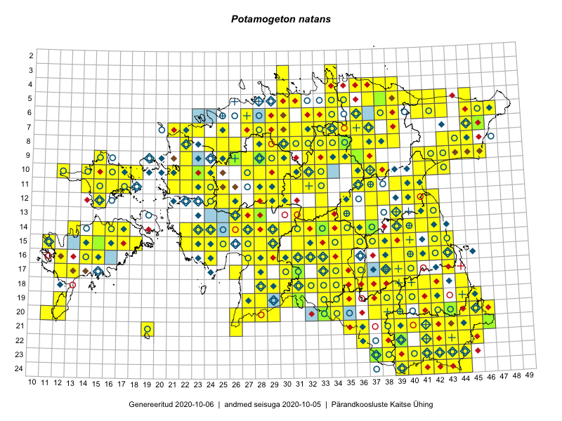

Potamogeton natans
Uuendatud: 2016-12-01
Kaardile koondatud taksonid: Potamogeton natans L.

Kaart põhineb 332 kirjel, neist vaatlusi 329 ja eksemplare 3.
Kuvatud viited 20 esimesele andmebaasikirjele, ülejäänud PlutoFis
- Tiit Hallikma, Toomas Kukk, Indrek Tammekänd: 2015-06-09: 12-28: ala
- Toomas Kukk, Eerik Leibak: 2015-08-09: 14-15: ala
- Tiit Hallikma, Indrek Tammekänd, Toomas Kukk: 2015-06-09: 12-29: ala
- Tiit Hallikma, Toomas Kukk: 2015-07-21: 05-45: ala
- Ott Luuk, Peedu Saar: 2015-09-03: 03-30: ala
- Peedu Saar: 2015-07-15: 15-39: ala
- Ott Luuk, Peedu Saar: 2015-08-13: 24-43: ala
- Peedu Saar, Eerik Leibak: 2015-07-30: 16-41: ala
- Peedu Saar, Liina Oja: 2015-07-22: 08-45: ala
- Ott Luuk, Toivo Sepp: 2015-07-12: 10-31: ala
- Toomas Kukk, Tiit Hallikma: 2015-07-24: 06-41: ala
- Toomas Kukk, Tiit Hallikma: 2015-06-10: 15-31: ala
- Toomas Kukk, Tiit Hallikma: 2015-06-11: 11-29: ala
- Peedu Saar, Liina Oja: 2015-07-24: 09-45: ala
- Peedu Saar: 2015-08-04: 14-36: ala
- Peedu Saar: 2015-08-11: 13-41: ala
- Peedu Saar, Ott Luuk: 2015-08-12: 23-42: ala
- Peedu Saar, Ott Luuk: 2015-08-13: 24-42: ala
- Peedu Saar, Eerik Leibak: 2015-08-16: 12-40: ala
- Ott Luuk, Toivo Sepp: 2015-07-12: 11-31: ala